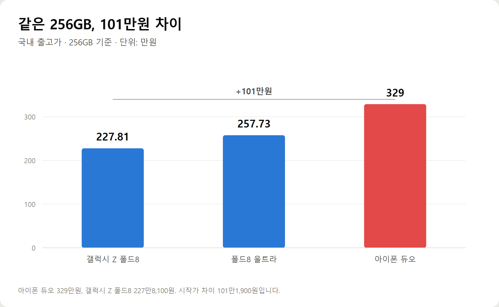
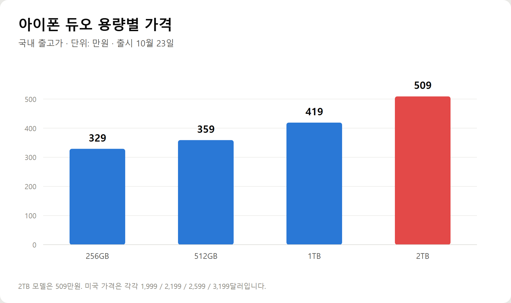
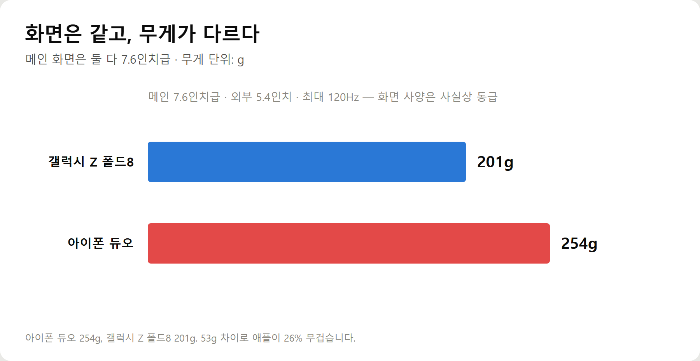

<meta charset="utf-8">
<title>아이폰 듀오 vs 갤Z폴드8 — 101만원 차이의 정체 — 나의 투자 그리고 행복한 여행</title>
<meta name="description" content="애플 첫 폴더블 아이폰 듀오가 256GB 329만원으로 공개됐습니다. 갤럭시 Z 폴드8과 가격·무게·AI를 비교하고, 삼성증권이 제시한 400달러 재료비 여력과 수혜주까지 정리했습니다.">
<meta name="viewport" content="width=device-width, initial-scale=1">
<link rel="canonical" href="https://danielmoon82.github.io/moon/posts/foldable-war-2026-09-10.html">
<link rel="preconnect" href="https://fonts.googleapis.com">
<link rel="preconnect" href="https://fonts.gstatic.com" crossorigin>
<link rel="stylesheet" href="https://fonts.googleapis.com/css2?family=Hahmlet:wght@400;600;800&family=IBM+Plex+Mono:wght@400;500&family=IBM+Plex+Sans+KR:wght@300;400;500;600&display=swap">

<style>
  :root{
    --paper:#F2EEE6;--surface:#FAF8F3;--surface-2:#E7E1D5;
    --ink:#191510;--ink-2:#4A4235;--ink-3:#7D7364;
    --line:#D6CEBF;--line-soft:#E4DDD0;--accent:#B06A15;--accent-bright:#C2761A;
    --up:#E5484D;--down:#3B82F6;
    --f-display:"Hahmlet",'Nanum Myeongjo',"Apple SD Gothic Neo",serif;
    --f-body:"IBM Plex Sans KR","Apple SD Gothic Neo","Malgun Gothic",sans-serif;
    --f-mono:"IBM Plex Mono","SFMono-Regular",Consolas,monospace;
    --pad:clamp(20px,5vw,64px);
  }
  @media (prefers-color-scheme:dark){
    :root:not([data-theme="light"]){
      --paper:#0B1120;--surface:#121A2C;--surface-2:#1A2439;
      --ink:#E9EEF7;--ink-2:#A9B5C9;--ink-3:#72809A;
      --line:#26314A;--line-soft:#1D2739;--accent:#E8A33D;--accent-bright:#F0B45C;
    }
  }
  *{box-sizing:border-box;}
  body{margin:0;background:var(--paper);color:var(--ink);font-family:var(--f-body);
    font-weight:300;font-size:1rem;line-height:1.75;-webkit-font-smoothing:antialiased;}
  a{color:inherit;}
  img{max-width:100%;height:auto;}
  .wrap{max-width:760px;margin:0 auto;padding-inline:var(--pad);}
  .nav{position:sticky;top:0;z-index:20;background:color-mix(in srgb,var(--paper) 88%,transparent);
    backdrop-filter:saturate(180%) blur(12px);border-bottom:1px solid var(--line);}
  .nav-in{display:flex;align-items:center;justify-content:space-between;height:58px;}
  .brand{font-family:var(--f-display);font-weight:600;font-size:1rem;letter-spacing:-.02em;text-decoration:none;}
  .back{font-family:var(--f-mono);font-size:.72rem;color:var(--ink-3);text-decoration:none;}
  .article{padding-block:clamp(40px,7vw,72px) clamp(56px,9vw,96px);}
  .eyebrow{font-family:var(--f-mono);font-size:.68rem;letter-spacing:.16em;text-transform:uppercase;
    color:var(--accent);margin:0 0 14px;}
  h1{font-family:var(--f-display);font-weight:800;font-size:clamp(1.6rem,4.4vw,2.3rem);
    line-height:1.3;letter-spacing:-.03em;margin:0 0 16px;}
  .byline{font-family:var(--f-mono);font-size:.72rem;color:var(--ink-3);
    padding-bottom:24px;border-bottom:1px solid var(--line);margin-bottom:32px;}
  h2{font-family:var(--f-display);font-weight:600;font-size:1.25rem;letter-spacing:-.02em;margin:42px 0 14px;}
  h3{font-family:var(--f-display);font-weight:600;font-size:1.05rem;letter-spacing:-.02em;
    margin:30px 0 10px;padding-top:14px;border-top:1px solid var(--line-soft);}
  h3 .code{font-family:var(--f-mono);font-size:.7rem;font-weight:400;color:var(--ink-3);margin-left:6px;}
  p{margin:0 0 18px;color:var(--ink-2);}
  ul.checks{margin:0 0 18px;padding-left:20px;color:var(--ink-2);}
  ul.checks li{margin-bottom:8px;font-size:.94rem;}
  table{width:100%;border-collapse:collapse;font-size:.88rem;margin-bottom:8px;}
  th{font-family:var(--f-mono);font-size:.66rem;letter-spacing:.06em;text-transform:uppercase;
    color:var(--ink-3);text-align:right;padding:8px 6px;border-bottom:1px solid var(--line);}
  th:first-child{text-align:left;}
  td{padding:10px 6px;border-bottom:1px solid var(--line-soft);color:var(--ink-2);}
  td.num{font-family:var(--f-mono);text-align:right;font-variant-numeric:tabular-nums;}
  td.up{color:var(--up);} td.down{color:var(--down);}
  .scroll{overflow-x:auto;}
  figure{margin:22px 0;}
  figure img{display:block;border-radius:3px;background:var(--surface-2);}
  figcaption{margin-top:8px;font-family:var(--f-mono);font-size:.68rem;color:var(--ink-3);text-align:center;}
  .note{margin-top:34px;padding:16px 18px;border-left:3px solid var(--accent);
    background:var(--surface);border-radius:0 3px 3px 0;}
  .note p{margin:0;font-size:.85rem;color:var(--ink-3);}
  .foot{border-top:1px solid var(--line);background:var(--surface);padding-block:30px 38px;}
  .foot p{margin:0;font-size:.8rem;color:var(--ink-3);}
</style>

<nav class="nav">
  <div class="wrap nav-in">
    <a class="brand" href="../index.html">나의 투자 그리고 행복한 여행</a>
    <a class="back" href="../index.html#stocks">← 시황으로</a>
  </div>
</nav>

<main class="wrap article">
  <p class="eyebrow">Market</p>
  <h1>아이폰 듀오 공개 — 가격 329만원, 무게 254g, 그리고 공급망</h1>
  <p class="byline">투자 · 2026-09-10 기준</p>

  <p>한 줄 요약: 애플 첫 폴더블 '아이폰 듀오'가 256GB 329만원으로 나왔습니다. 같은 용량 갤럭시 Z 폴드8보다 101만1,900원 비싸고 53g 무겁습니다.</p>
  <p>공개는 2026년 9월 9일(현지시간), 국내 출시는 10월 23일입니다. 화면은 펼침 7.6인치·접힘 5.4인치로 폴드8과 동급이고, 칩은 A20 프로입니다.</p>
  <p>이 글은 2026년 9월 10일 기준 보도로 확인 가능한 수치만 모아 제품과 공급망을 정리한 기록입니다.</p>
  <h2>1. 가격 — 같은 256GB에 101만원</h2>
  <p>가장 크게 갈린 항목은 가격입니다.</p>
  <figure><figcaption>256GB 기준 국내 출고가 비교 (단위: 만원)</figcaption></figure>
  <ul class="checks">
    <li>아이폰 듀오 256GB — 329만원</li>
    <li>갤럭시 Z 폴드8 256GB — 227만8,100원</li>
    <li>갤럭시 Z 폴드8 울트라 256GB — 257만7,300원</li>
  </ul>
  <p>아이폰 듀오와 폴드8의 시작가 차이는 101만1,900원입니다. 삼성의 최상위 라인업인 폴드8 울트라와 비교해도 용량별로 70만~74만원 높습니다.</p>
  <p>용량을 올리면 격차는 더 벌어집니다.</p>
  <figure><figcaption>아이폰 듀오 용량별 국내 출고가 (단위: 만원)</figcaption></figure>
  <p>512GB 359만원, 1TB 419만원, 그리고 최고 사양 2TB는 509만원입니다. 미국 가격은 각각 1,999 / 2,199 / 2,599 / 3,199달러입니다.</p>
  <p>폴드8은 256GB·512GB·1TB로 구성되고, 아이폰 듀오는 2TB까지 있습니다. 저장용량 선택 폭은 애플이 넓습니다.</p>
  <h2>2. 화면은 사실상 같다</h2>
  <p>가격 차이만 보면 화면이 다를 것 같지만 그렇지 않습니다.</p>
  <ul class="checks">
    <li>아이폰 듀오 — 펼침 7.6인치(19.3cm) 슈퍼 레티나 XDR OLED, 접힘 5.4인치(13.6cm), 내·외부 모두 최대 120Hz 가변 주사율</li>
    <li>갤럭시 Z 폴드8 — 메인 193.2mm(7.6형급) 다이내믹 아몰레드 2X</li>
  </ul>
  <p>둘 다 좌우로 펼치는 방식이고, 접었을 때 여권과 비슷한 비율입니다. 펼치면 소형 태블릿에 가까워집니다.</p>
  <p>화면 크기와 주사율로는 우열을 가리기 어렵습니다. 격차는 다른 데서 납니다.</p>
  <h2>3. 무게와 두께 — 여기서는 삼성이 앞선다</h2>
  <figure><figcaption>무게 비교 · 화면 사양은 동급</figcaption></figure>
  <p>아이폰 듀오는 254g, 갤럭시 Z 폴드8은 201g입니다. 53g 차이로 애플이 26% 무겁습니다.</p>
  <p>폴드8은 '세계 최경량 폴더블'을 내세우고 있습니다. 201g은 일반 바 형태 대화면 스마트폰과 비슷한 수준입니다.</p>
  <p>두께는 아이폰 듀오가 펼쳤을 때 5.2mm, 접었을 때 11.3mm입니다. 전체 크기는 펼침 164.6×117.8mm, 접힘 84.1×117.8mm입니다.</p>
  <p>애플은 티타늄 테두리로 내구성을 높이고 베이퍼 챔버를 넣어 발열을 잡았습니다. 그만큼 무게와 두께를 내줬다는 해석이 가능합니다.</p>
  <div class="note"><p>매일 주머니에 넣고 다니는 물건에서 53g은 체감되는 차이입니다. 휴대성만 보면 폴드8이 유리합니다.</p></div>
  <h2>4. AI — 애플의 가장 큰 약점</h2>
  <p>가격보다 더 논란이 되는 대목이 AI입니다.</p>
  <p>아이폰 듀오는 iOS 27을 기반으로 애플 인텔리전스와 '시리 AI'를 탑재했습니다. 사용자의 맥락을 파악해 작업을 추천하고, 대화로 정보를 검색하는 에이전트입니다.</p>
  <p>문제는 지역입니다.</p>
  <div class="note"><p>시리 AI는 유럽과 중국 등 주요 시장에서 출시 일정이 불투명합니다. 기능을 제대로 쓸 수 있는 지역이 제한된다는 뜻입니다.</p></div>
  <p>삼성은 이 지점을 멀티 AI로 파고들고 있습니다. 갤럭시 AI는 여러 모델을 물려 쓰는 방식이라 지역 제약이 상대적으로 덜합니다.</p>
  <p>반대로 애플이 앞서는 부분도 분명합니다. A20 프로 칩의 연산 성능, 애플펜슬 지원, 그리고 아이폰·맥·아이패드로 이어지는 생태계입니다.</p>
  <p>한 가지 빠진 기능이 있습니다. 초박형 설계 때문에 얼굴 인식 '페이스 아이디'가 빠지고 측면 전원 버튼의 '터치 아이디'가 들어갔습니다. 기존 아이폰 사용자에게는 낯선 변화입니다.</p>
  <h2>5. 카메라와 나머지 사양</h2>
  <p>아이폰 듀오의 후면 카메라는 4800만 화소 2개, 전면은 1200만 화소입니다.</p>
  <p>망원을 빼고 메인·초광각 듀얼로 단순화했습니다. 얇은 두께를 맞추기 위한 선택으로 보입니다.</p>
  <p>칩은 애플의 최신 모바일 칩 A20 프로에 자체 통신 칩 C2를 함께 넣었습니다. 통신 칩을 직접 만들어 넣은 것은 원가와 전력 관리 양쪽에서 의미가 있습니다.</p>
  <p>한국은 아이폰 듀오의 1차 출시국 70여개국에 포함됐습니다. 국내 출시일은 10월 23일, 사전예약은 10월 16일 오후 9시부터입니다.</p>
  <h2>6. 투자자 관점 — 제품보다 공급망</h2>
  <p>여기가 이 글에서 가장 중요한 부분입니다. 폰을 살 사람과 주식을 볼 사람의 관심은 다릅니다.</p>
  <figure><figcaption>투자 관점에서 볼 숫자 셋</figcaption></figure>
  <p>삼성증권은 아이폰 듀오의 높은 판매가격을 바탕으로 **약 400달러의 추가 재료비 여력**이 발생할 것으로 분석했습니다. 비싸게 팔면 부품에 더 쓸 수 있다는 뜻입니다.</p>
  <p>그러면서 파인엠텍과 비에이치를 관련 수혜주로 제시했습니다. 실제로 공개 당일 국내 폴더블 부품주가 들썩였습니다.</p>
  <p>삼성 안에서는 이해가 엇갈립니다.</p>
  <ul class="checks">
    <li>삼성디스플레이 — 애플에 고부가 OLED 패널을 공급하면 물량 확대라는 직접적인 호재</li>
    <li>삼성전자 MX사업부 — 폴더블 경쟁이 격해지면서 점유율 압박</li>
  </ul>
  <p>같은 회사 안에서 한쪽은 호재, 한쪽은 부담입니다. '한 지붕 두 가족'이라는 말이 나오는 이유입니다.</p>
  <p>트렌드포스는 앞서 삼성전자의 폴더블 점유율이 45.2%에서 35.4%로 낮아질 것으로 전망한 바 있습니다. 화웨이·아너·샤오미의 확장과 애플 진입이 겹친 결과입니다.</p>
  <h2>7. 변수 — 메모리값과 '3%의 벽'</h2>
  <p>공급망 쪽에는 반대 방향의 힘도 있습니다.</p>
  <p>트렌드포스는 메모리 공급 부족과 가격 상승으로 스마트폰 공급망 전반의 비용 압박이 커지고 있다고 진단했습니다. 부품값이 오르면 완제품 가격도 눌립니다.</p>
  <p>더 근본적인 문제는 수요입니다. 폴더블은 아직 전체 스마트폰 시장에서 3% 수준의 침투율에 머물러 있습니다. 업계가 '3%의 벽'이라고 부르는 지점입니다.</p>
  <div class="note"><p>애플이 들어왔다는 사실만으로 이 벽이 깨지는 것은 아닙니다. 329만원부터 시작하는 가격은 대중화와는 반대 방향입니다.</p></div>
  <p>경쟁도 더 복잡해졌습니다. 화웨이는 9월 7일 양쪽 화면이 모두 안으로 접히는 U자형 구조의 메이트 XT 2를 공개했고, 샤오미는 같은 날 가로 폭을 넓힌 샤오미 18 폴드에 자체 칩셋 XRING O3을 처음 탑재했습니다.</p>
  <p>폼팩터 실험이 동시에 여러 방향으로 벌어지고 있다는 뜻입니다.</p>
  <h2>8. 그래서 어느 쪽을 사야 하나</h2>
  <p>정리하면 이렇습니다.</p>
  <p>아이폰 듀오가 맞는 경우입니다.</p>
  <ul class="checks">
    <li>이미 아이폰·맥·아이패드를 쓰고 있어 생태계 연동이 중요한 경우</li>
    <li>애플펜슬을 쓰고 싶은 경우</li>
    <li>칩 성능과 내구성(티타늄·베이퍼 챔버)에 값을 지불할 의사가 있는 경우</li>
  </ul>
  <p>갤럭시 Z 폴드8이 맞는 경우입니다.</p>
  <ul class="checks">
    <li>무게와 두께가 중요한 경우 — 53g은 체감됩니다</li>
    <li>AI 기능을 지역 제약 없이 쓰고 싶은 경우</li>
    <li>같은 화면에 100만원을 아끼고 싶은 경우</li>
  </ul>
  <p>한 가지 덧붙이면, 애플 첫 세대 제품은 다음 세대에서 크게 개선되는 경우가 많았습니다. 급하지 않다면 2세대를 기다리는 선택도 합리적입니다.</p>
  <h2>자주 묻는 질문</h2>
  <p>Q. 아이폰 듀오 국내 가격과 출시일은?</p>
  <p>256GB 329만원, 512GB 359만원, 1TB 419만원, 2TB 509만원입니다. 국내 출시일은 10월 23일이고 사전예약은 10월 16일 오후 9시부터입니다.</p>
  <p>Q. 갤럭시 Z 폴드8보다 얼마나 비싼가요?</p>
  <p>같은 256GB 기준으로 101만1,900원 비쌉니다. 폴드8이 227만8,100원, 아이폰 듀오가 329만원입니다. 폴드8 울트라와 비교해도 70만~74만원 높습니다.</p>
  <p>Q. 화면 크기가 다른가요?</p>
  <p>거의 같습니다. 둘 다 메인 화면이 7.6인치급이고 최대 120Hz를 지원합니다. 아이폰 듀오의 외부 화면은 5.4인치입니다.</p>
  <p>Q. 페이스 아이디가 빠졌다는 게 사실인가요?</p>
  <p>사실입니다. 초박형 설계를 위해 얼굴 인식 '페이스 아이디' 대신 지문 인식 '터치 아이디'가 측면 전원 버튼에 들어갔습니다.</p>
  <p>Q. 이번 발표로 수혜를 보는 국내 기업은?</p>
  <p>삼성증권은 약 400달러의 추가 재료비 여력을 근거로 파인엠텍과 비에이치를 수혜주로 제시했습니다. 삼성디스플레이도 애플에 OLED 패널을 공급하면 물량 확대가 기대됩니다. 다만 이는 증권사 분석이며 투자 판단의 근거로 삼기 전에 직접 확인이 필요합니다.</p>
  <h2>정리하면</h2>
  <p>애플이 7년 만에 폴더블 시장에 들어왔습니다. 화면은 삼성과 동급이고, 가격은 101만원 비싸고, 무게는 53g 무겁습니다.</p>
  <p>애플이 내세우는 것은 칩 성능과 생태계, 그리고 티타늄·베이퍼 챔버 같은 내실입니다. 내주는 것은 휴대성과 AI의 지역 제약입니다.</p>
  <p>소비자 입장에서는 취향과 기존 기기 구성에 따라 답이 갈립니다. 투자자 입장에서는 조금 다른 그림이 보입니다.</p>
  <p>애플이 비싸게 팔면 부품에 쓸 돈이 늘어납니다. 삼성디스플레이에는 물량이 늘고, 삼성전자 MX사업부에는 경쟁이 늘어납니다. 한 회사 안에서 방향이 갈립니다.</p>
  <p>그리고 그 모든 계산의 전제는 '3%의 벽'이 깨지는지입니다. 329만원부터 시작하는 가격표가 그 벽을 넘게 해줄지는, 10월 23일 이후 판매량이 답할 것입니다.</p>
  <div class="note"><p>이 글은 공개된 보도자료와 시장 자료를 정리한 것으로 특정 제품의 구매나 특정 종목의 매수·매도를 권유하지 않습니다. 투자 판단과 그에 따른 손실의 책임은 투자자 본인에게 있습니다.</p></div>
  <p>※ 가격·사양은 2026년 9월 10일 보도 기준이며 이후 변경될 수 있습니다. 수혜주 관련 내용은 삼성증권 분석을 인용한 보도를 근거로 하며, 점유율 전망은 트렌드포스 자료를 인용한 보도입니다.</p>
</main>

<footer class="foot">
  <div class="wrap"><p>나의 투자 그리고 행복한 여행 · 투자 판단의 참고 자료일 뿐, 매수·매도를 권유하지 않습니다.</p></div>
</footer>
